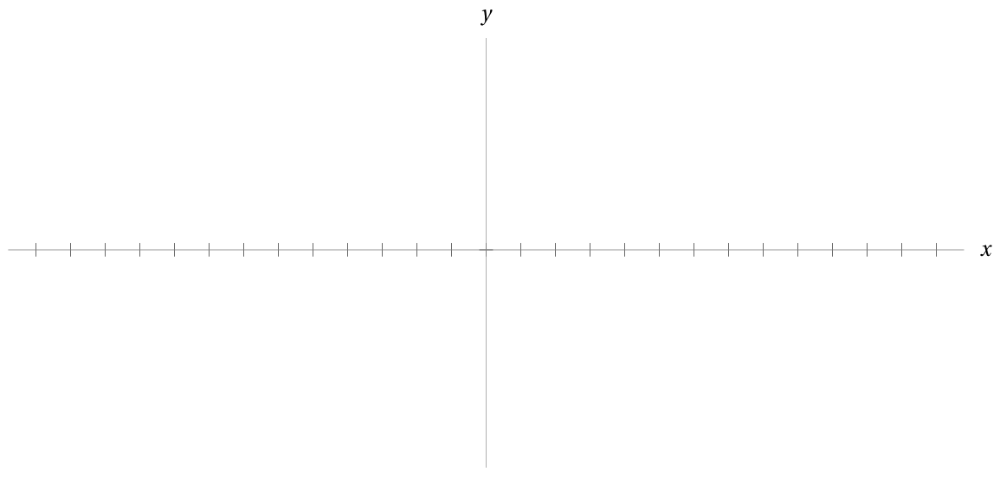

- Write the quadratic polynomial \(7-3(x-4)^2\) in “standard form,” \(ax^2+bx+c.\)
-
Write each of these quadratic polynomials
in “vertex form” \(a(x-h)^2+k.\)
Remember that for a quadratic
in “standard form,” \(ax^2+bx+c,\)
the \(x\)-coordinate of the vertex
\(\frac{-b}{2a}.\)
\(x^2+4x+9\)
\((x+2)^2+5\) \(x^2-3x+3\)\(\Bigl(x-\frac{3}{2}\Bigr)^2-\frac{3}{4}\) \(-2x^2+4x+5\)\(-2(x-1)^2+7\) -
Consider this table of \((x,y)\)-coordinates. Plot these coordinates on the axes provided, and note that it’s possible a single parabola passes through these points.
\(x\) \(y\) -5 -2 -2 -3.5 -1 -2 0 0.5 2 8.5 3 14 It turns out these points do lie on a common parabola.
- What is the \(x\)-coordinate of the vertex of this parabola? (Hint: symmetry)
- Sketch the graph of this parabola on those axes, and estimate what the \(y\)-coordinate of the vertex should about be.
-
Write down the formula for the quadratic function whose graph is this parabola.
-
Suppose that, based on
historical data from the UN,
the population of the earth, in billions,
can be modelled by this quadratic function \(P\)
measured \(t\) years since 1980.
\[P(t) = -\frac{t^{2}}{2000}+\frac{t}{9}+\frac{21}{5}\]
- According to this model, what is the current population of the earth?
- Find an estimate from a reputable source online for the current population of earth. Write down the source of your estimate, and calculate the percentage that the model’s prediction is off from this estimate.
- How can you tell from the formula for \(P(t)\) that the vertex of the graph \(y = P(t)\) will represent a maximum?
- What are the \(x\)- and \(y\)-coordinates of the vertex of this graph? What do these coordinates mean within the context of the model?
- Do you think a quadratic function is a good choice of model for population in the long term? Discuss the pros and cons.
Puzzle
Consider a very peculiar car that when travelling uphill must go exactly 56mph, when travelling on level ground must go exactly 63mph, and when travelling downhill must go exactly 72mph. You drive this car from your home to the next town over and the trip takes four hours. The return trip however, from town back home, takes four hours and forty minutes. How far is the town from your home?